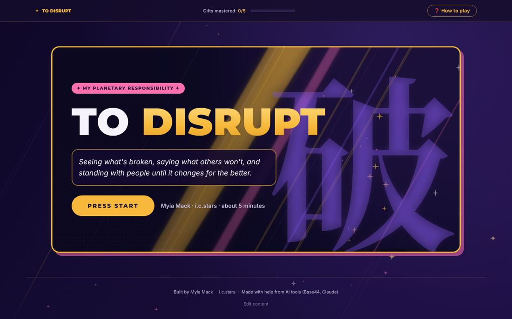

To Disrupt: Choose Your Path
My Planetary Responsibility, turned into an interactive walkthrough game. Meet my 5 gifts, train through real-life quests, unlock the careers they lead to, and beat a boss quiz for each one.
Intern Tech Consultant | Project Management - i.c.stars

I've planted seeds on a Chicago farm and watched them grow into food, in a city where too many neighborhoods still go without it. For many black and brown families, limited access to healthcare, fresh food, and education means settling for just surviving.
I didn't know my own first seeds were planted in front of a screen. Navigating game systems and a PC always came easier to me than it did for others; it's where things first clicked, long before I knew tech could be a career. Now that tech runs how we work, learn, and connect, I want to help build it, not just use it. That's what brought me to i.c.stars.
These resources at an early age carried me past survival and into discovering who I am. Now I want to open that same door for others: to see what's broken, say what others won't, and stand with people until it changes for the better. That's what it means to me to Disrupt. Choose a level below to see how I'm doing it.

My Planetary Responsibility, turned into an interactive walkthrough game. Meet my 5 gifts, train through real-life quests, unlock the careers they lead to, and beat a boss quiz for each one.
Choose a level to begin.
Eliminating operational friction and giving healthcare organizations greater control over their supply networks.
A step-by-step SQL and Excel study guide I wrote for my cohort during Geek Week. I turned my own mistakes into lessons, covering column order, capitalization, date formats and Excel formulas, with each error, the fix, and an analogy that explains why.
For the Buffalo Soldiers workshop at i.c.stars, each intern built a personal army: the strengths that show up for us in both personal and professional settings. I brought mine to life as a scrollable digital comic, built in HTML and CSS, centered on a challenge I have faced: being interrupted while sharing ideas in team meetings. Eight soldiers, four personal and four professional, each bring a strength and a weakness, and together they plan for before, during, and after the meeting so my voice is heard. I put deliberate care into every panel and layout so it reads like a true manga, and it has become a piece I would gladly read even if it weren't my own.
For the Year of the Horse leadership workshop at i.c.stars, I am building an interactive museum-wall timeline that tells my story backward, from 2054 to 2025, as a declaration of the future I am willing to grow into. Each of its 10 stops pairs a title and a fortune with images, a reflection, a favorite dish, and a soundtrack song. A guided tour moves through the years like a song's progress bar, with photos appearing one after another. The project is still growing, and I am continuing to add to it as my own vision takes shape.
I'd love to connect. Reach out at mmack@icstars.org.